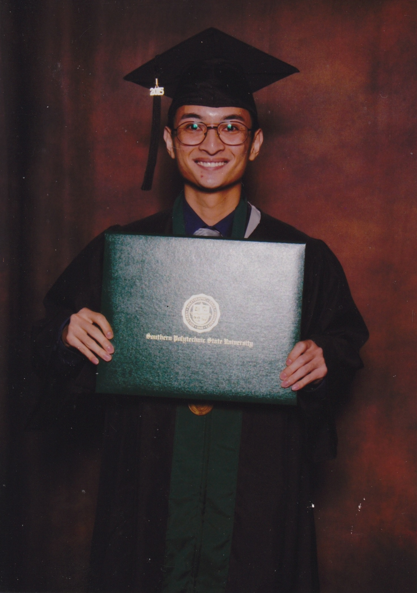

 Hello, my name is Tony Dang, Founder and CEO of Contact Information Social Media Biography Resume (CISMBR). I would like to tell you a true story. There was a student who graduated from a medicore unveristy, Southern Polytechnic State University, with a medicore degree, Bachelor of Science in Software Engineering with minors in Computer Science and Information Technology on May 2015. The student has not found a career since his graduation. He has three hurdles going against him upon graduation. The student has a severe stuttering problem, does not know how to answer behavior questions, and he does not have any work experience. The student went to almost a dozen interviews, mostly phone interviews, and he failed every one of them.
His first interview was a phone interview for a Quality Assurance position with ABC company. The total time for that interview starting with hello to hanging up the phone was no more than five minutes. That phone interview was all behavioral questions.
The lead software tester had asked the student:
The student severely stuttered during that phone interview. The lead software tester thanked him for his time, and he said, "My time is valuable, and I have other potential candidates to interview." The student had 1.5 of 8.4 ounces of Red Bull in his system during that phone interview.
The student has never made it past all of his phone interviews, and he has never received any phone call back. Moreover, he has never made it past all of his first-round, face-to-face interviews.
An interviewer had once asked the student, "Where do you see yourself in 5, 10 years from now?"
That student now becomes a Founder and CEO of his own startup.